About
I'm a passionate Infrastructure Analyst and a System Engineer, I am thrilled to be at the cutting edge of technological innovation, where server administration and migration, Generative Adversarial Networks (GANs) in cloud infrastructure, capacity planning, performance monitoring, change tickets reviewing in network security and ensure adherence to change management process to drive groundbreaking advancements. My excitement is particularly focused at the dynamic intersection of digital network security defensing and ethical hacking vulnerability analysis, where I am committed to pushing the boundaries of System Engineering and Machine Learning. My goal is to create transformative breakthroughs that revolutionize our interactions with servers, outplacement services and each other, shaping the future of communication and understanding.
I was a graduated fellow at the University of Bedfordshire, United Kingdom. I have conducted a comparison study for the Honeypot Architecture Concept with Machine Learning for Network Threats Quantification project in my research experience. Also in my academics, I have completed BSc in Psychology and Counseling degree from the Horizon Campus - Malabe, Sri Lanka. I have a strong background in both server decommissioning and building, leveraging advanced frameworks like VMware, VERITAS, and Keras as well as AWS cloud services for scalable and efficient deployment.
I have successfully sophisticated projects across various domains, including healthcare and government sectors, notably developing domain-specific virtual assistants and implementing large-scale translation systems for the USA, European and Singapore Data Centers. My role involves comprehensive project management, from planning to execution and delivery, developing and maintaining Infrastructure as Code (IaC) scripts and templates for provisioning and managing resources, ensuring timely completion and alignment with strategic objectives. I excel in stakeholder management, resource allocation, and risk mitigation, ensuring project success and client satisfaction. My technical acumen is complemented by my proficiency in deployment tools, sever patching, data visualization and cloud services making me a versatile expert in the field of system engineering.
I am currently diving into the world of Machine Learning and Generative Adversarial Networks, with a particular focus on developing cutting-edge unsupervised models for human speech recognition and perception. My research journey is complemented by my active involvement with the Asia Pacific Network Information Center, and my role as a Reviewer for IEEE Access, where I contribute to the editorial team for Information Engineering and Applied Computing. Outside the academic realm, I relish quality time with friends, exploring artificial intelligence developments, creating 3D models, capturing the essence of architecture through photography and indulging in mystery novels or action-packed films. Puzzles also hold a special place in my leisure activities. Fluent in English, Sinhala, French, Spanish and also I’m expanding my linguistic repertoire with Chinese and Hindi.
Machine Learning Framework Skills
Leveraging a robust Machine Learning framework, I seamlessly integrate Exploratory Data Analysis (EDA), strategic planning, and sophisticated feature engineering. This dynamic approach not only uncovers valuable insights but also ensures the creation of highly predictive and actionable models. By combining thorough data exploration with meticulous planning and innovative feature engineering, I enhance model performance and drive impactful, data-driven decisions.
Infrastructure Programming Skills
A solid foundation in programming languages, combined with a deep understanding of data structures, algorithms, and object-oriented programming (OOP) concepts, has significantly enriched my ability to master and apply machine learning skills effectively.
Database Management Skills
In today’s digital landscape, data stands as a vital asset across all industries. Masterful data management is the key for businesses to make insightful decisions, elevate customer experiences, and secure a competitive advantage. This is where expertise in database management becomes indispensable.
Cyber Security & Networking Skills
Digital security is an extensive field, and it continues to grow as technology becomes an increasingly important part of how modern businesses function. Effective networking can protect companies against potential digital threats, which can save them a lot of money and help maintain their reputation. Identifying potential problems within a security infrastructure and devising and implementing solutions can be an intellectually stimulating career opportunity.
Cloud Computing Skills
Cloud computing has quickly become integral to technology strategy and operations for companies across industries. Cloud is powering innovation like AI, IoT, big data analytics, virtual computing and more. The demand for cloud computing skills and certifications has absolutely exploded over the last decade. Having demonstrable cloud skills can be a huge plus for my resume.
Experience
With over 3 years of deep expertise in infrastructure analyzing, I have honed my skills in providing remote infrastructure support to ESXi Servers & Windows Servers including Production, Develop, Test, Quality and Disaster Recovery. My extensive experience spans a diverse array of applications such as Installing, Configuring, Designing and Troubleshooting on Windows Server 2022, 2019, 2016, 2012 and 2008 Stand Alone Servers, Backup & Antivirus Servers, Group Policy & Sites using Enterprise Standards. I've successfully tackled challenges in Server Decommissioning and Building, Incident Responding, Capacity Planning, Performance Monitoring, SLA Investigations, Forensics and Various Other Reports for the Windows Servers. Additionally, my proficiency extends to Networking, Data Science and Computer Vision, enabling me to deliver comprehensive and impactful AI-driven solutions. If you're seeking for a proactive, tech-savvy problem-solver with a passion for AI, let’s get in contact.
Senior Infrastructure Engineer
January 2025 to Present
HCLTech - Colombo 2, Sri Lanka
I design and optimize scalable infrastructure solutions to enhance system performance and reliability. I lead cross-functional teams to implement cloud and on-premise integrations, focusing on security and efficiency. I proactively identify and resolve infrastructure bottlenecks to minimize downtime and improve user experience. I champion best practices in automation and process improvements to drive operational excellence. My key responsibilities:
- Providing Remote Infrastructure Support to 250+ ESXi Servers & 1000+ Windows Servers including Production, Develop, Test, Quality and DR.
- Installing, Configuring, Designing and Troubleshooting on Windows Server 2019, 2016, 2012 and 2008 Stand Alone Servers, Backup & Antivirus Servers, Group Policy & Sites using Enterprise Standards.
- Decommissioning of ESX Host/Physical Machine as well as Virtual Servers considering Firewall and Security.
- Incident Response, Capacity Planning, Performance Monitoring, SLA Inventagations, Forensics and Various Other Reports for the Windows Servers.
- Implement Network Security and Data Communications best practices and stay updated on Security Threats and Vulnerabilities.
- Provide Solutions for any kind of Issues, Help and Better Solution for any kind of Query to Site Admins.
- Review of Change Tickets in Network Security, IT Ethics and ITSM based IRIS Tool to Ensure Adherence to Change Management Process.
Infrastructure Engineer
January 2022 to December 2024
HCLTech - Colombo 2, Sri Lanka
I support the maintenance and monitoring of network infrastructure to ensure seamless operations. I assist in troubleshooting technical issues and implementing solutions to improve system efficiency. I collaborate with senior team members to deploy updates and manage system configurations. I stay updated on industry trends to contribute to continuous improvement initiatives and enhance our infrastructure's performance. My key responsibilities:
- Providing Remote Infrastructure Support to 100+ ESXi Servers & 500+ Windows Servers including Production, Develop, Test, Quality and DR.
- Configuring and Troubleshooting on Windows Server 2019, 2016, 2012, 2008 and 2003 Stand Alone Servers, Backup & Antivirus Servers, Group Policy & Sites using Enterprise Standards.
- Decommissioning of ESX Host/Physical Machine as well as Virtual Servers.
- Develop and Maintain Infrastructure as code (IaC) scripts and templates for Provisioning and Managing Resources.
- Capacity Planning, Performance Monitoring, Making SLA, UP Time and Various Other Reports for the Windows Servers.
- Troubleshoot Issues related to Cloud Infrastructure and Services to ensure uninterrupted operations.
- Need to Ensure that Tickets\Tasks\Changes needs to get worked within the Defined SLAs.
Technical Writer
January 2018 to December 2018
WIX - Tel Aviv-Yafo, Israel
I create clear, user-friendly documentation that simplifies complex technical concepts for diverse audiences. I collaborate with engineers and product teams to ensure accurate, up-to-date content that supports product usability and adoption. I develop guides, manuals, and online help resources to empower users and enhance their experience. I continuously refine content based on feedback to align with industry standards and improve clarity and accessibility. My key responsibilities:
- Conduct research, outline, compose, and review content, collaborating closely with various departments to comprehend project needs.
- Consult subject-matter experts to collect information and craft, structure, and produce procedure manuals, technical specifications, and process documentation.
- Collaborate with development and support leads to pinpoint documentation repositories, modify and refine content, and determine optimal solutions for data compilation and centralized storage.
- Investigate, develop, and maintain information architecture templates that align with organizational and legal standards and facilitate seamless data migration.
- Generate content in alternate media formats to maximize usability, ensuring a consistent voice across all documentation.
Academic Qualifications
My academic journey includes a BSc in Computing Networking and Telecommunication, and BSc in Psychology and Counseling, each contributing to a robust foundation and a multifaceted perspective in the field of Infrastructure engineering.
Bachelor of Science (BSc)
2019 - 2021
University of Bedfordshire, United Kingdom
I have completed a Bachelor of Science (BSc) degree in Computer Networking and Telecommunication from University of Bedfordshire, United Kingdom. I conducted a comparison study for existing honeypots and point-out a new honeypot architecture concept to solve the project's challenge of increasing the scalability and flexibility of honeypots using honeypot-based data collections and deception technologies as my final year individual project. Quantitative method is used to analyze the research results and this project supports automated configuration and expands the scope of honeypot data analysis to track attackers in the network of the organization.
Bachelor of Science (BSc)
2021 - 2024
Cardiff Metropolitan University, United Kingdom
I have completed a Bachelor of Science (B.Sc) degree in Psychology and Counseling from Cardiff Metropolitan University, United Kingdom where I developed a deep understanding of human behavior, mental health, and therapeutic techniques. My studies equipped me with skills in active listening, empathy, and evidence-based counseling strategies to support individuals in their personal and emotional growth. In my project, I dove into how mind, behavior, and environment intersect, revealing the human element in digital crime. I explored the application of psychological theory in forensic settings, encouraging a fresh, critical evaluation of security challenges. I completed hands-on training that allowed me to apply psychological theories in real-world settings, enhancing my ability to connect with and guide people effectively. My academic journey fueled my passion for helping others and laid the foundation for my career in mental health support.
Professional Memberships
Joining Professional Associations and Organizations is essential for fostering industry expertise and facilitating knowledge sharing within a specific field or occupation. These memberships not only enhance professional growth but also provide valuable networking opportunities, access to cutting-edge research, and a platform for influencing industry standards and practices.
(Membership No: 98954266)
(Membership No: 143849)
(Membership No: 16479)
(Membership No: 10100576)
Professional Certifications
Professional certifications demonstrate my expertise and proficiency in a particular skill or field, which can make me a more attractive candidate, enable superior job performance, and often lead to career advancement. It provides third-party validation of my abilities, which can be valuable when applying for jobs. In competitive job markets, certifications can give an edge over other candidates who do not possess them. They showcase my commitment to continuous learning and professional development. Also holding relevant certifications and performing at a higher level can open the door to new and more significant responsibilities within an organization.
- Cloud
- Cyber Security & Networking
- Site Reliability & Platforming
- Microsoft Certified Azure Fundamentals (AZ-900)

- Microsoft Certified Azure Administrator (AZ-104)

- CompTIA Cloud+ (CV0-003)
- AWS SysOps Administrator
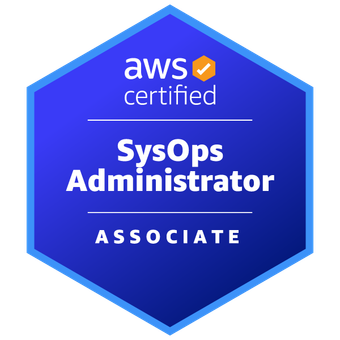 - Google Cloud Associate

- HashiCorp Certified: Terraform Associate (002)
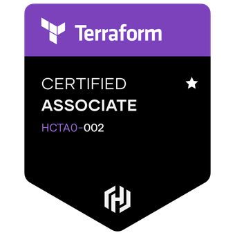
- EC-Council Certified Ethical Hacker (C|EH)
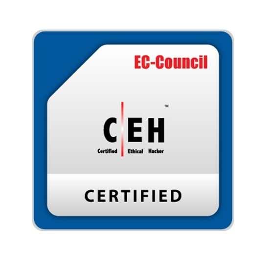 - Certified in Cybersecurity (CC)
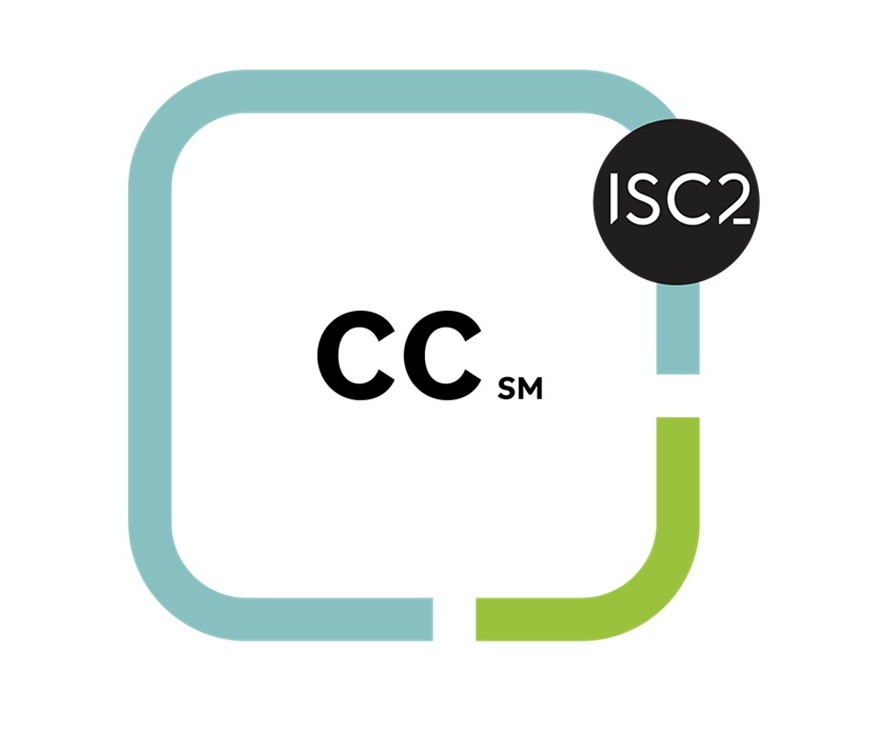 - CISCO Certified Network Associate (200-301: CCNA)
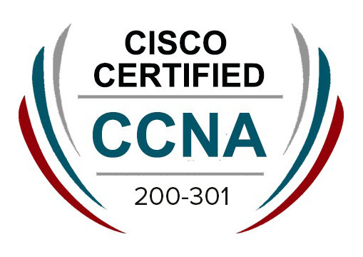 - CompTIA Network+ (N10-008)
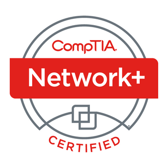 - AWS Advanced Networking
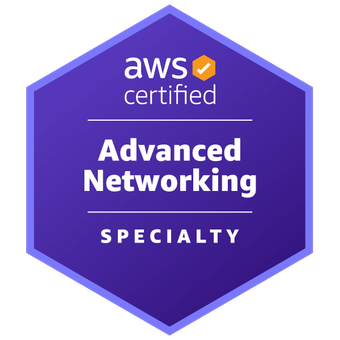 - Linux Foundation Certified Systems Administrator
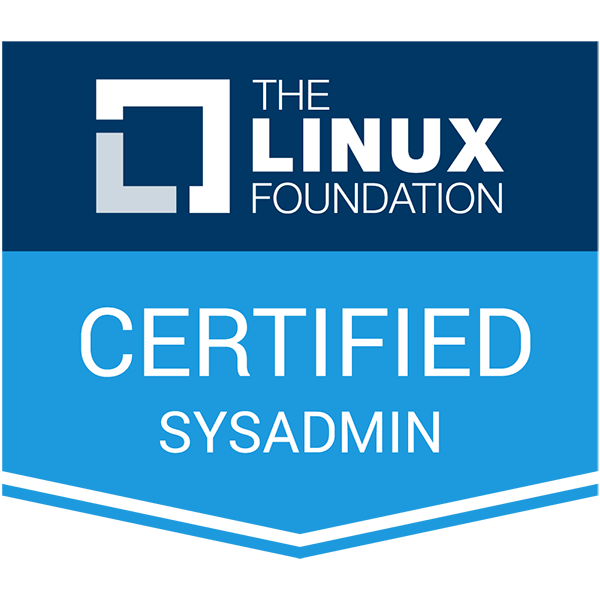
- Certified Kubernetes Application Developer
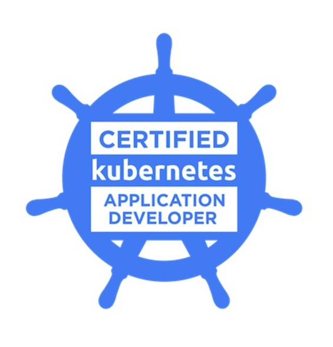 - Linux Certified System Engineer
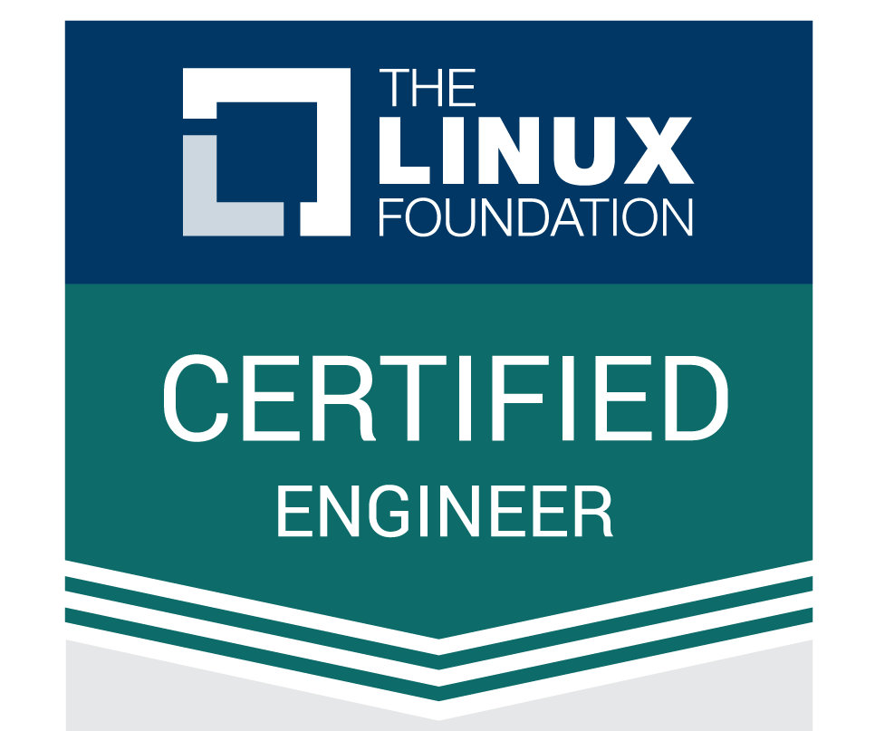 - Prometheus Certified Associate
- Docker Certified Associate
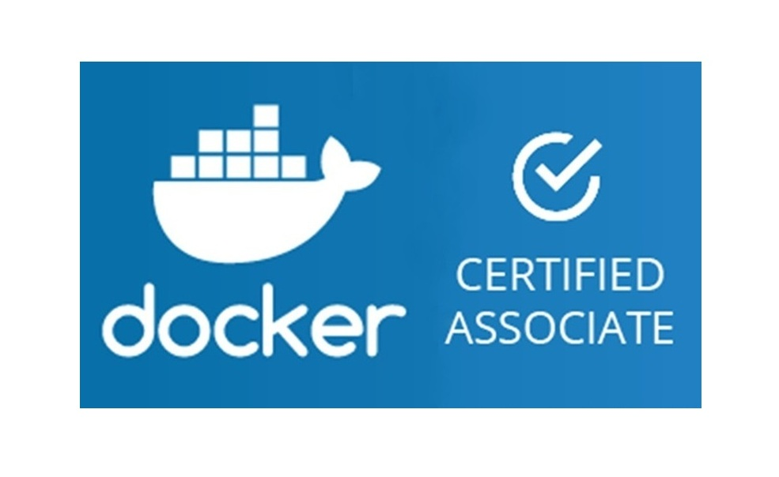 - AWS Certified DevOps Engineer

- SAP Certified Associate
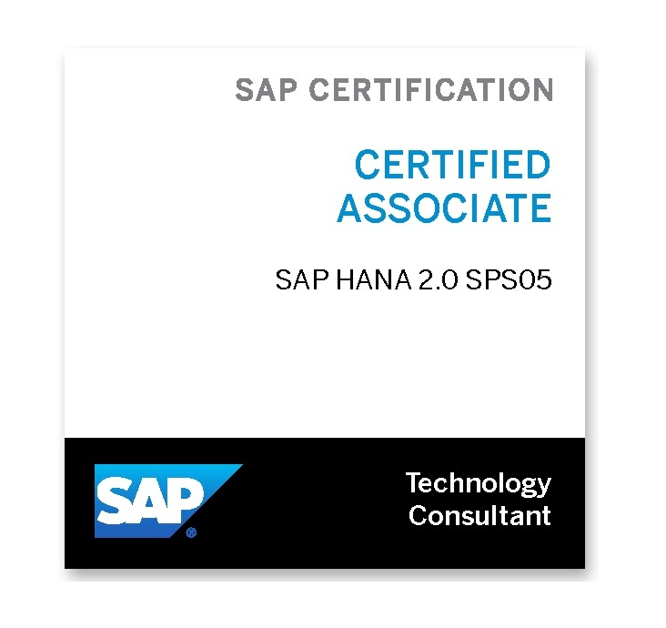
Connect with Me
"Engage with me, whether through conversation or writing, is a seamless experience that’s both dynamic and enriching. Whether we're chatting face-to-face or exchanging thoughts in text, every interaction is designed to be engaging and insightful."
Location:
Alubomulla-West, Bandaragama City, Kalutara District, Western Province, Sri Lanka
Email:
dinushasalith1998@gmail.com
Contact:
+94 75 439 7526